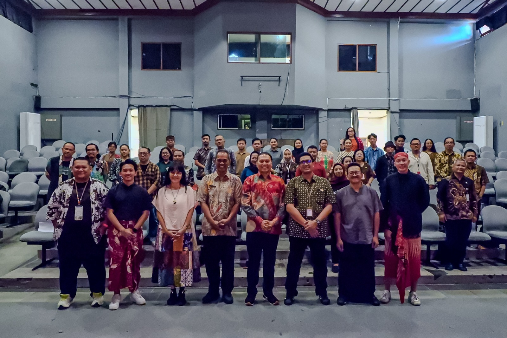
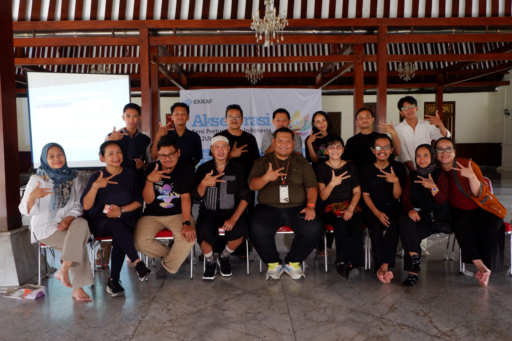
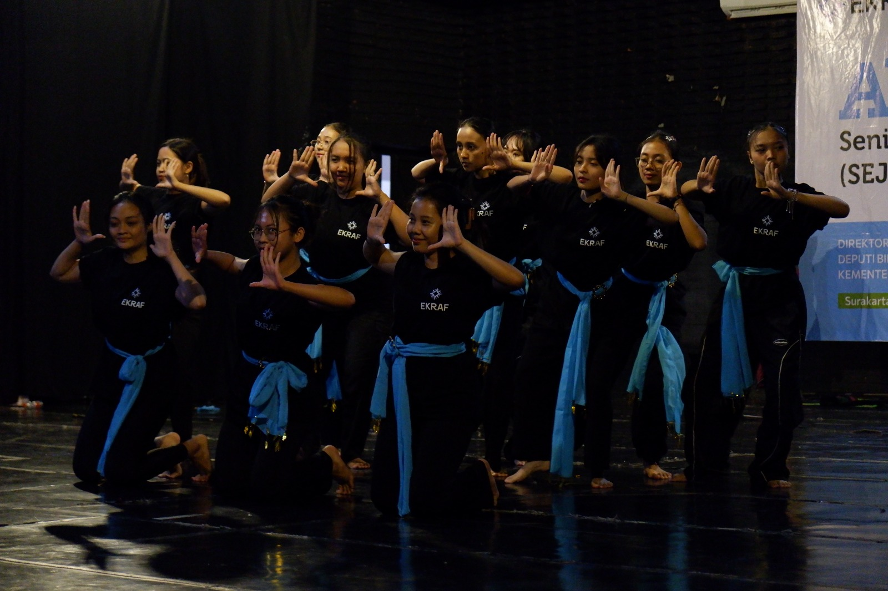
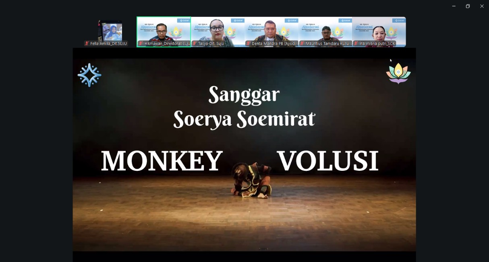
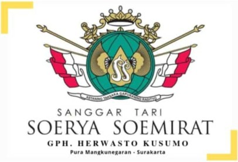
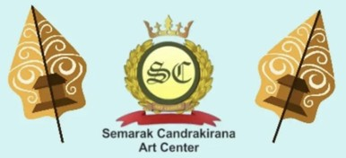

Galeri Kegiatan





SEJUKIN merupakan program akselerasi yang bertujuan mengembangkan kemampuan teknis dan artistik pegiat seni pertunjukan khususnya seni tari tradisi melalui pelatihan dan pementasan dengan peserta komposer, koreografer, produser, penari, dan desainer kostum. Urgensi dari kegiatan ini adalah meningkatkan daya saing pegiat seni pertunjukan, memperkuat ekosistem seni, melestarikan budaya, dan berkontribusi pada ekonomi kreatif, memastikan seni pertunjukan tetap relevan dan mendorong inovasi sesuai dengan tren pasar.
Dengan menumbuhkan seniman yang lebih profesional dan produktif, menciptakan arus pendapatan baru, membuka lapangan kerja, dan meningkatkan perputaran ekonomi yang pada akhirnya berkontribusi pada pertumbuhan ekonomi.
Substansi: ASETI (Asosiasi Seniman Tari Indonesia), Sanggar Ayodya Pala, Sanggar Swargaloka.
Teknis: Dinas Pariwisata dan Kebudayaan Kota Surakarta, ISI Surakarta, ASETI Daerah, Pegiat Ekonomi Kreatif Subsektor Seni Pertunjukan.
10 orang dari 2 sanggar (masing-masing sanggar terdiri dari komposer, koreografer, produser, penari, dan desainer kostum). Sanggar merupakan rekomendasi dari Dinas Kebudayaan dan Pariwisata Kota Surakarta.
Provinsi prioritas pengembangan ekonomi kreatif menurut Bappenas, merupakan Kabupaten/Kota Kreatif, dan ekosistem seni pertunjukan (khususnya seni tari tradisi) yang maju, ditunjukan dengan adanya perguruan tinggi khusus seni, banyak sanggar seni, dan memiliki event seni pertunjukan tahunan yang berkelas internasional.
Rekomendasi pengembangan ekosistem seni pertunjukan.
Pelatihan karya tari, musik, dan desain kostum.
Menampilkan dan melatih hasil karya kepada publik.
Review karya untuk peningkatan kualitas produk.
Penampilan karya pada ruang publik lengkap.





